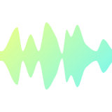

A Real-time digital audio and video workstation
for all events and occasions.
Version
Developer
Make things possible.
@vjdyofficial
Developer's Very Cute Bestfriend
I can do anything.
@kimaleczandra
Contributors
Sound Effects contributor of radio idents and sampler.
@davidrldavid
Electron
Chromium
Node.js
Components
A complete, cross-platform solution to record, convert and stream audio and video.
Google’s open-source design system for building beautiful, usable products.
Google’s open-source icon for embedded web and windows applications.
Monosource Design Language
A VJDY Official Pictures' new design language based on Material Design with more retro and vintage vibes.
Monosource Icon
A VJDY Official Pictures' new icon design to create custom Material Design icon.
WebAudio
The power of digital signal processing audio for Chromium.
VJDY Digital TrueSurround
The new era of surround sound audio system.
VJDY Digital TrueSound 3D
The TrueSurround Stereo virtualizer that mimics the 3D space.
A file archiver with a high compression ratio.
Weather Forecast API for showing weather conditions in real time.
Earthquake Forecast API for showing recent earthquakes
AudioWorklet and Built-in Effect Libraries
in modules/class/processors
Lowers sample rate and bit depth for gritty, retro lo-fi texture and digital crunch. - Build by vjdyofficial with Claude Sonnet 5.5
Layers slightly detuned, time-shifted copies to create lush width and movement. - Build by vjdyofficial with Claude Sonnet 5.5
Smooths out volume dynamics by taming loud peaks and lifting quiet details. - Build by vjdyofficial with ChatGPT v5
Shapes tonal brightness by sweeping or filtering frequencies above or below a set point. - Build by vjdyofficial with ChatGPT v5
Repeats incoming audio with distinct, rhythmic delays that fade out over time. - Build by vjdyofficial with Claude Sonnet 5.5
Balances frequency bands to sculpt clarity, warmth, low end, or presence. - Build by vjdyofficial with ChatGPT v5
Sweeps a short delay time to produce metallic, jet-like comb-filtering motion. - Build by vjdyofficial with Claude Sonnet 5.5
Generates and blends synthesized waveforms to add harmonic weight or modulation. - Build by vjdyofficial with Claude Sonnet 5.5
Shifts phase across frequency notches for sweeping, swirling, psychedelic movement. - Build by vjdyofficial with Claude Sonnet 5.5
SOLA-based pitch processor - Build by vjdyofficial with Claude Sonnet 5.5
FFT-based pitch processor - Build by vjdyofficial with Claude Sonnet 5.5
Simulates natural acoustic reflections to place sound inside spaces or rooms. - Build by vjdyofficial with Claude Sonnet 5.5
The 3-band only version of equalizer. - Build by vjdyofficial with GPT v5
Measures, tracks, or calibrates pitch accuracy and reference frequency standards. - Build by vjdyofficial with Claude Sonnet 5.5
VJDY Digital TrueSurround Libraries
in modules/class/surroundsound
Surround to Stereo Downmixer
Surround Sound Channel gain adjustment module
Microphone / Line-in stereo to surround panner module
Virtual 3D Stereo/Surround emulation module
Stereo/Surround Enhance module
VJDY FM Sampler Libraries
in modules/class/sounds
Radio Ident sampler module
Looper sampler module
Sound Effects sampler module
Audio Input Enhancement Libraries
in modules/class/audioinput
Frequency Gain adjustment inspired from VB-Audio Voicemeeter
Noise reduction module inspired from VB-Audio Voicemeeter
Service Worker Libraries
in modules/class/worklet
Audio recording module that uses AudioContext and MediaStreamDestination.
Calculating decibels of Peak and RMS, TV Standards, and ISDB-T
GPU and CPU accelerated visualizer processing module
Node.js Runtime Libraries
in node-modules
A multi-language profanity filter with full TypeScript support
@2toad/profanity
JavaScript library for mobile-friendly interactive maps - https://leafletjs.com/
leaflet
Read and write audio metadata in Node.js and browsers. Parse tags from a wide range of audio formats and edit tags and cover art without re-encoding audio. - https://github.com/Borewit/music-metadata#readme
music-metadata
https://github.com/aadsm/jsmediatags#readme
jsmediatags
HTTP and HTTPS modules that follow redirects. https://github.com/follow-redirects/follow-redirects
follow-redirects
list system fonts https://github.com/oldj/node-font-list#readme
font-list
Simple to use, blazing fast and thoroughly tested websocket client and server for Node.js https://github.com/websockets/ws
ws
@derhuerst/ffprobe-static
@ffmpeg-installer/ffmpeg
@ffmpeg/ffmpeg
Color Module Libraries
in modules/color
Generates Color from HEX into RGB formats, Color Wheels and Material3 Colors.
Convert HEX Code into series of CSS Filter.
Calls the function to log into the command line with colors.
AI-coded Material3 Color engine to use in Node.js.
Convert specific HEX Color Code into bunch of hue variations.
Lyrics Module Libraries
in modules/lyrics
Requires music-metadata to get the embedded lyrics.
Convert embedded lyrics into arrays with timecodes if any.
Common Libraries
in modules/common
A node module that can format any number into formatted text.
License